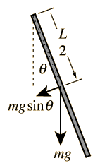
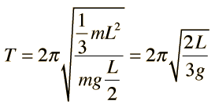

| 
Note that the period is independent of the mass and radius of the rod.
|
A physical pendulum in the form of a uniform rod suspended by its end has period

(Enter data for two of the variables and then click on the active text for the third variable to calculate it.)
|